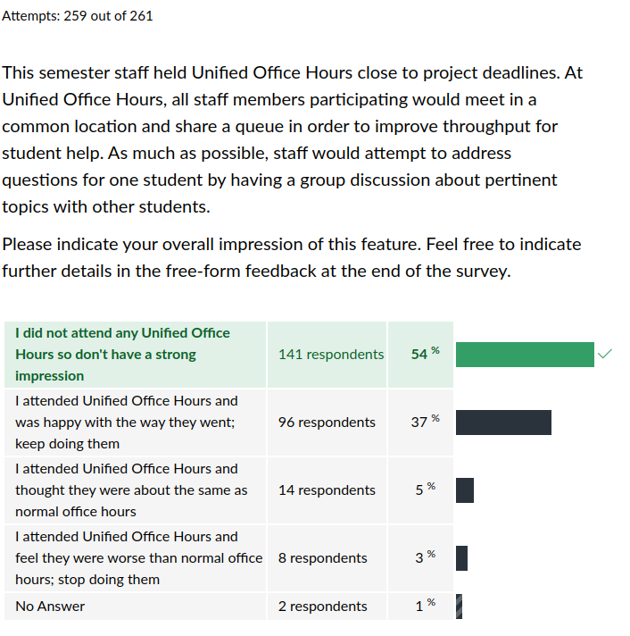
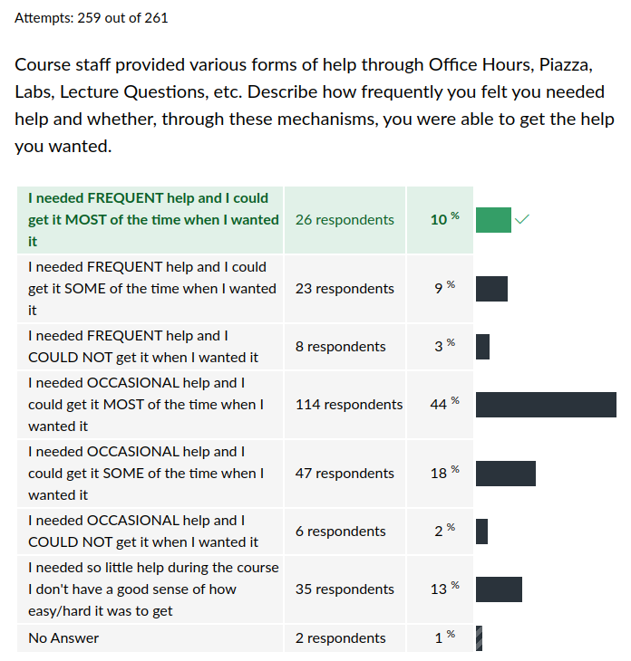

CSCI 2021 Exit Survey Results
Table of Contents
Summary Statistics for Multiple Choice Questions





Notable Freeform Responses
Student comments are given in plain face.
Instructor responses are italicized.
Props to Staff Members
A number of staff members were individually thanked by students in their free-form feedback for help during the semester.
| Staff Member | Thank-yous |
|---|---|
| Akansha | 1 |
| Ani | 1 |
| Caroline | 2 |
| Hady | 3 |
| Joon | 2 |
| Kartik | 1 |
| Lukas | 4 |
| Mya | 2 |
| Preeti | 1 |
| Safwan | 7 |
| All TAs | 10 |
Lectures
EP were amazing but having people ask questions in class just to get ep is very distracting because some ask questions just to get ep and they are too complicated and it gets so distracting. Already have hard time focusing.
Like free speech, in-class questions are a mixed bag: when you encourage folks to speak, you might not always like what they have to say. I found only a few instances in which students appeared to be "farming EPs", asking questions just to earn credit. The majority of questions, 95% or so, are legit and inform both the student asking but their colleagues and me as well.
One thing that could be better is having more information on the slide show, for example including the answers to the excersizes would be helpful if reviewing just the slideshows alone.
Slightly awkward but, literally every Exercise is followed by Answers:
Personally, I wish our professor can always hold the lectures both in-person and online via Zoom at the same time (And recording as well). So that I can see the lectures during class time without going to the classroom, and later on check on the recording of one of the specific lectures for review.
Not likely to happen. I've seen others struggle with handling in-person plus online plus recording. Try it sometime yourself and you'll likely find that it's a lot more difficult to manage than you think. Catering to a few online folks when the majority is in-person is pointless as mostly what folks want is a recording.
Having participation points come from labs AND lecture was confusing, since it seems like the system is rewarding multiple different parts of class, when it would probably be simpler if it was just one.
This is a fair quibble but the point is Engagement: if you are putting forth regular effort by doing labs and attending lecture you are engaged. If you start projects late and need to submit late, you are not as engaged as we'd like. These two play against each other which is why they are connected. It would be simpler to disconnect them, but as has been said, "Make everything as simple as possible, but not simpler." (Einstein).
I commute via bus to school which can take an extreme amount of time… The setup of this course has made things so much easier for me. Not having to attend labs/lecture in person, posting slides and records, discord office hours + piazza. All of that helped so incredibly much.
One of the lessons from the plague was that it is not too hard to set infrastructure up to support students in varying circumstances. While we are still an in-person institution primarily with full service to those coming physically to campus, there are reasonable accommodations that we try to provide based on past experience for those on the move.
I like the engagement point policy, though I think there should be more opportunities to earn them through means that aren't talking in class, which some people aren't super comfortable with
Labs and Piazza discussion are these opportunities.
Office Hours
On project 3, you should have more unified office hours in the week before it is due. This was by far the most challenging project and TA help would've made it a little smoother.
I'll take that under recommendation. However, staff time is valuable and having multiple days of office hours like this is a huge commitment. I would not do this without significant staff backing: they have projects to complete too.
Exams
I felt overwhelmed by the practice tests if I didn't know as much as I thought because I felt I didn't have enough time to study to get up to speed.
I had not heard this perspective previously. I'm open to suggestions on what can be done but right now I like the cycle of having a practice exam near to an actual exam. The schedule is already tight so I'm not sure what to change. Ping me if you have ideas.
I found the problems where you try to find the error in a chunk of code to be REALLY challenging in that frame of time.
Debugging skills are crucial skills in computing. I agree that time pressure makes them even more daunting. Nonetheless, my exam philosophy is to examine whether students have extracted vital skills from doing the coursework so I'm likely to continue using debugging problems.
- The projects really help students prepare for the exams. Exams are fair and do a good job of testing students on their knowledge.
- The midterms were pretty much what I'd expected.
I think exams were hard but doable.
Exams are hard but based on the overall grades in the course, many students were prepared and delivered on them. Even if they weren't your forte, it is possible to do reasonably in the class.
Its hard to recover from a bad exam
A very bad exam score does hit your standing overall. I will consider in the future whether some measures are worthwhile to mitigate this. However, with overall grades in the course as high as they are, there isn't much urgency to this from my perspective. That may feel disappoint on an individual level for some students and I am sorry for that. Unfortunately, my responsibility is to the population.
Projects
It's incredibly frustrating to go to office hours near the end of a project when you have a minor bug that needs to be fixed and someone who has just started their project that day is asking for help getting started on the day that its due.
I agree. It is frustrating for the staff as well that folks procrastinate. We have tried a variety of ways to limit procrastination and encourage engagement. They have had varying levels of success. I don't expect to stamp it out completely ever. Fortunately all it takes to surmount this type of frustration is patience so cultivate that. It solves a shockingly wide array of problems.
I found the written description of project sufficient enough that I did not watch the overview videos (or I did, once, but did not learn anything new).
Different strokes for different folks…
The bomb assignment was exceptionally frustrating
It does require a lot of patience and thought. Hopefully you got well acquainted with GDB in the process. If you did, the frustration will pay dividends in the long run.
I expected an assignment about reading assembly code to be a nightmare, but the binary bomb turned out to be a lot more fun than I expected.
Different strokes for different folks…
The third project was extreamly hard and I felt like we didnt get taught enough ASM and there arent that many ASM resources online as its kinda outdated
"It's kind of outdated…" Heh. Reminds me of a video I saw recently in which someone railed that "It's 2023 and have to program in this super inconvenient, stupid assembly language." I laughed. It's like saying "It's 2023 and we still have to walk using our legs instead floating. Super inconvenient." Assembly is not outdated. Sure, some dialects like x86-64 are full of warts but so is everything that hangs around for 5 decades. Every CPU and microcontroller out there is designed and constructed as a physical device to implement an assembly language so it is hardly "outdated". As well, "convenience" is not part of the picture: folks actually have to build these incredibly complex machines just to get a little assembly language at all. The options are more or less "code against this assembly language interface" or "do it by hand". Most folks find the former more "convenient" and the latter "outdated".
I'm sorry that did not come through in the class, that assembly languages underpin all that we do in applied computing (as opposed to purely theoretical computing). We did select a textbook with TONS of information on assembly. Have a look at it sometime…
The one project I didn't like was project 3 because coding in assembly is hard.
It is hard to code in assembly. That's why folks invented interpreters and compilers. Once you code in assembly, you realize C IS a high-level language. If you ever need build a compiler or interpreter, you're not better acquainted with how assembly works.
- Project 1 was really tough for me, that is partly on me for starting it late but I wished it could've been more emphasized on how time consuming it was.
Projects were a slap in the face for me, I'd finish one part of the homework (e.g. stocks part of P1) and realized I should've started way earlier if I ever dreamed of finishing the hashset part.
TAs tried very hard to project this by holding tutorial sessions 1 week before the P1 deadline. They reported that this worked well for students that attended. I'm sorry that our messaging didn't reach you. I'm told for many students, CSCI 2021 and 2041 are the first courses in which they can't sit down and hack out a project the day of the deadline. For folks accustomed to that, larger projects require adjustment that is painful sometimes. However, real world projects are NOT hacked out in one day so this is a necessary adjustment that is better learned earlier rather than later.
In this class I feel like the labs are basically copy and paste from example code, and projects are super complex… I'm just not a fan of the project system.
If you want to learn to write complex programs, practice writing complex programs. If you have a more specific idea of how to bridge the gap between lab and projects, lay it on me. However, just about every technique that was used in projects was demonstrated in a lab. I admit that many students need to be reminded of this:
- "Remember what you did in Lab 07?"
- "No, I just copied and pasted"
- "Well pull it up and look at it. What do you see?"
- "Oh, it's a lot like this part of P3."
- "Almost like someone designed it that way…"
Thankfully we have a lovely staff there to have such reminder conversations.
I liked that the labs and hw tie directly into the project a lot in how to do things, it was super helpful to revisit labs/hw when stuck on the project.
Projects always taught me so much, and I'm so grateful to have amazing TA's to help and guide me through them, but I guess I'm really here to maybe bring awareness to those who simply don't know how to start a lot of the time. (I will say, though, it's super satisfying once I get to see code that I struggled to write workcorrectlyandwell , and a lot of the time I do feel proud of myself :D )
All satisfaction comes from starting, struggling and finally arriving. Always take a moment to feel proud when you arrive.
Additionally, I think it could have been cool if we had a bit of freedom for some of the projects to create something on our own.
Occasionally students ask for this. In days bygone when classes were smaller, it was more feasible to allow such freedoms. These days with the large class sizes, it is hard to scale up to allow individual expression. You'll find opportunities for this in some upper level classes so be patient.
The projects currently were a little too easy and simple in my opinion, but at the same time it provided so much knowledge and experience.
Glad that they didn't break your back and proved useful.
Some of the projects were very hard and very stressful.
Sorry that they proved so difficult for you. I hope that you found some value in them, either now or in the long run.
Project release times were a little unpredictable at times.
I agree. I have grand ambitions but run late on things and I'm sorry that negatively impacted folks at times.
I wish there was a lab or earlier lecture that went into more depth about ELF.
We tried to cover the essentials for the project but there is a lot that goes into the format. Thankfully you can investigate this on your own as there is a ton of information out there on the ELF format.
I like the idea of having extra credit for the projects but I wish this credit could be used for the class in general and not just for other projects.
I'll consider amending this in the future. Makeup credit on Projects is intended to help folks patch problems they had with earlier projects. But I can see your reasoning here and will think about it.
I think that one thing I would change would if at all possible making the project pages more condensed, as there is a lot of information present on the page, which can be daunting to start the project. It made me rely more on the intro video rather more than I would have liked.
If you have some suggestions on how to condense a project spec, lay it on me. This year several TAs tried their hand at reformatting a few project specs to make them more approachable. After working on it a for a while, they decided that it is as short as possible without omitting information that is useful in some contexts. Students like videos as they synopsize starting the project well. Students also like tutorials and office hours because they can get a TA to explain parts of the project. But just about everything you need to know is in the project spec so that those other things are optional. If you are willing to read.
I would spend much effort to come up with a solution that is freely provided on the project page. I'm not suggesting you change anything here, but I would have preferred to not have the hand holding as then the rewards of my efforts would have extended beyond my ego.
You and that last guy should really have a chat with one another.
Labs / HW
- Lab attendance should be worth something. I went to every single lab and watching the TA demos was awesome and it helped me a ton, but by the end of the semester no one was really going anymore, and it was me and maybe five others who showed up regularly.
Man, so many of the TAs were very helpful. I wish I could connect any of the names I see on the canvas page to a face (so maybe add headshots next semester so people can more easily praise their favorite TAs), but everyone was knowledgable and patient when it came to my questions.
Headshots are a good suggestion. I've heard from tons of students that never learned the names of TAs and this would help.
HW was similar to lab in terms of what we learned each week, which was nice for the reinforcement of our knowledge.
Labs and HW are meant to be low-hanging fruit to teach course concepts. Glad the combo worked for you.
- I would suggest for the future would to make the homework more important for students to not just click through, even I am guilty of that.
HW: very hard to motivate myself to do the code part of the homework when the quiz gave you the answers and the code wasn't tested
Labs: The overviews were very long and unnecessary because the labs were mostly copy and pasting code
I am reluctant to increase the difficulty of labs and HW much as they are meant to build skills projects which are more challenging. However, I'll try to rework some labs to make some of them a bit more interactive. This may as well help with the copy-paste perception mentioned by others.
- I really like the weekly homework and labs since they helped practice what was taught in lecture.
- It was annoying that lecture lagged behind the homeworks a bit, but not too bad.
Sometimes I felt like the labs and the homeworks didn't line up very well with the lecture.
There are some concepts that are better lectured on while others are better practiced in a lab setting. Ideally I could pick a lab day for folks to meet that aligned well with how the lecture flowed. But unfortunately we are resource constrained. I'll continue to try to schedule lectures in a way that compliments labs and HW but I don't expect have covered everything in lecture before a lab/HW is released every time.
Miscellaneous
Also, I know curving is not really a thing, but perhaps add a slight curve to everyone's grade
The median overall score in the class was 87%, a high B grade. 80% of all students received an A or B of some form. I see little need to arbitrarily increase grades overall most students would likely reject traditional grade curving which assigns a flat percent of students each letter grade.
Although I struggled at times, I think I learned a lot!
Glad to hear it. There is nothing more satisfying than committing and transcending. Keep engaging and you'll go far!
I found that everyone was just as stressed as I was and that aided my stress in a way. This class is difficult but one of the good things is the community.
Shared suffering breeds camaraderie. I'm glad you found some people to be your comrades.
I had never been exposed to C language, which made me completely unable to keep up with the progress at the beginning of the course, which made my first test score very low.
I'm sorry you were caught off guard by the pace of the course. No one is expected to know C as they come in. They are expected to have programming proficiency. It is quite difficult to keep up if you are trying to make up for an experience deficit too. Whether or no that was your case, I don't know. However, I hope you came away having learned some things despite the difficulty.
I didn't like learning assembly by actually programming in it. I felt as if it was a waste of time to learn all of this just to not use it ever again.
I'm very sorry to hear that. Saying as much means that some of the core ideas of the course did not sink in for you. If you'd like to discuss this further, let me know and I'll see if I can clarify why what you are saying is so wrong.
[Gained] more of an appreciation for compilers and coding languages.
Right on. Now go build your own compiler. That will make you appreciate them even more.
Advice to Future Students
- The assigned textbook was dense and a bit overwhelming to read at times, so I gained most of my knowledge of the course material through lectures. Don't skip those, even if it seems tempting to skip / not watch them!
- Don't delay projects, and having a good understanding of the project helps a lot with the tests.
- I really recommend students watch the recordings if they missed something during the lecture.
- I would definitely suggest that students use the project overview videos because they can be really helpful when you don't know where to start
- Lot of time needed for the course, need some patience.
- My suggestion is start projects when you get them. I say this because I didn't and the few days before a project was due was just plain horrible.
- Just stay determined and you'll learn a lot of things.
Amen.
Legit Concerns
There were brief concerns about how welcoming the class is for female students… Kauffman's constant use of "bruh" without any female or gender neutral counterpart used interchangeably…
That's not a brief concern. That's a major concern. If you'd like to talk more about this, please contact me. I'd be interested to here your ideas on equivalent terms for "bruh"; the internet is full of suggestions. The term "bruh" as a variety of meanings but I use it almost universally in mocking contexts as I associate it closely with stereotypical male behaviors like arrogance, over-confidence, and failure to listen. The half dozen times I used "bruh" in the lecture, that was my intent, to be humorous about behavior I find disappointing. I'm sorry that this attempt fell flat. Professors are not known for their comic sense but we won't get better without practice and feedback. I have known lots of male students who have demonstrated "bruh" qualities but very few folks of other genders who have show similar behaviors. This may be in part due to there being more males in computing. When we reach a better balance of genders, I suspect I'll see folks of non-male genders exhibit "bruh" tendencies and I'll need some new terminology then. If you have ideas on how to gently deride certain unfortunate attitudes in a gender-egalitarian fashion, let me know.
- Yeah, Kauffman is kinda fast talker like Ben Shapiro. Seems like both are bros.
[Kauffman] sounds like Ben Shapiro on 1.5x LOL
Being unacquainted with Ben Shapiro, I took a few minutes to look him up. He is a conservative talking head: anti-abortion, pro-gun, anti-vaccine, homophobic, pro-Ted Cruz, all views I find repugnant. He seems like a top-tier bruh and I expect I'd disagree with him on most things. If you were looking to compliment me in some fashion, you've failed spectacularly. If you were looking to take a shot at me and hurt my feelings, well done. If you didn't know what you were doing, now you do.
One-upsmanship
- Professor Kauffman's talk speed is just right, so I don't have to watch the video at 1.5x speed.
- Kauffman talks too fast to play at 1.5x on videos
- I don't think Kauffman talks too fast for 1.5x videos, I somehow managed to do 2x and still followed along just fine ;) .
- He actually talks at a perfect speed for 1.5x. I watched on 2x occasionally and perhaps I can't stretch that that speed was reasonable.
- I rewatched lectures in 1.5 speed
- Kauffman talks too fast to play at 1.25x on videos.
- Kauffman talks too fast to play on 1.25x on project videos
- Yes, Kauffman does talk too fast to play at 1.5x speed and sometimes 1.25x speed, and on even worse days 1x speed.
- I was actually able to understand Prof Kauffman at 2x speed so I think that's fine.
- Actually 2x speed works just fine
- Kauffman talks at the perfect pace to watch lectures at 2.5x
The Far Side
I missed quite a few lectures since the lecture room in MCB is very crowded. Not only is it crowded, it's crowded with CS majors. Not good.
You do realize those are the folks you'll be working with for the rest of your career?
Some of these survey options are too extreme. I struggled to pick an accurate answer to some of the questions that were asked. Just because I didn't find something STRONG, doesn't mean that it was moderate. I wish there was an option in between.
I'm glad your reflecting critically on your experience.
As much as I would like to return Kauffman's quip and creative insults, I learned so much in this class and the teaching style was phenomenal. (insert cleverly masked but painfully obvious insult here)
Incorporate more moogles into lecture slides
Need more undertale references
- I like the class so far. Please make the class harder for next semester lol
That won't be a problem for any gophers. Turtles on the other hand…